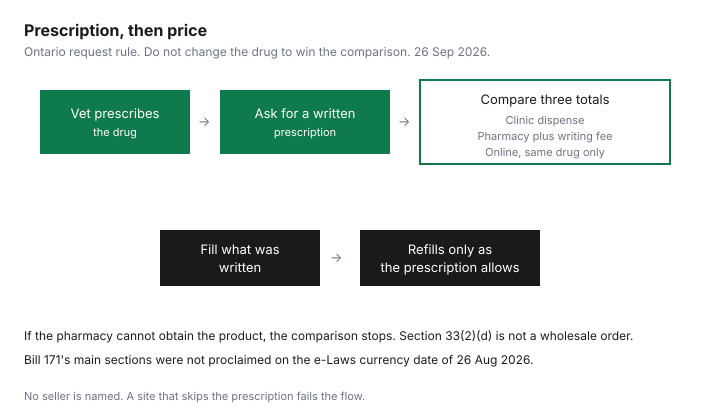

Pets · Canada
Buying Pet Medications for Less in Canada: Written Prescriptions, Pharmacies and Online Options
Clinic markups are hard to see when the only price in the room is the clinic’s price. The way through that, in Ontario, starts with a written prescription you are allowed to ask for, then a comparison you do with the prescription unchanged. The sources opened on 26 Sep 2026 are the Competition Bureau’s 30 Oct 2024 page, Ontario Regulation 1093, the Veterinary Professionals Act, 2024 as consolidated on e-Laws with a currency date of 26 Aug 2026, a CP24 report published 5 Mar 2026, and the Ontario College of Pharmacists’ draft animal-pharmacy policy and its 28 Aug 2026 consultation note. This is not a list of pharmacies to use, and it is not advice to change a dose. The veterinarian prescribes. A pharmacist dispenses what was written or calls the prescriber. Your workplace drug plan is for people. The workplace-coverage guide does not turn a pet drug into a human claim.
Key takeaways
- The Bureau describes exclusive distribution: manufacturers and, more recently, distributors that sell veterinary drugs to veterinarians and not, in the Bureau’s interviews, to pharmacists. It says about 30 percent of veterinary revenue comes from product sales.
- Ontario Regulation 1093, section 26, requires a written prescription when you ask for one instead of clinic dispensing. Section 33(2)(d) limits dispensing a drug for resale, except a limited quantity to another member or a pharmacist during a temporary shortage.
- The Veterinary Professionals Act, 2024, received royal assent on 6 Jun 2024. e-Laws still marks sections 1 to 98 as coming into force on a day to be named by proclamation. They are not in force. Do not plan on a year the statute has not named.
- CP24 reported on 5 Mar 2026 that some Ontario pharmacies were filling pet prescriptions. That is a news report, not the regulation. The College of Pharmacists’ draft policy was still a consultation, scheduled to close 26 Oct 2026 at 4:00 p.m. Eastern.
- No audited percent-off for heartworm or flea products was opened. The saving is the comparison you write down, after the writing fee. The exam-room version is on the vet-bill guide.
What the Competition Bureau found about pet-med pricing and exclusive distribution
The Bureau’s page, dated 30 Oct 2024, says it has received complaints about practices and rules that limit who can distribute pet medications and where people can buy them. It says veterinarians still prescribe, and that online pharmacies can be a lower-cost fill in many cases, while exclusive distribution limits pharmacists’ access to primary-care products. The practice it describes, from market interviews, is that manufacturers sell to distributors and that distributors, largely veterinary-owned, sell to veterinarians. The Bureau says manufacturers have started removing exclusivity clauses, and that the remaining restriction often sits with distributors. It also says pharmacists and veterinarians are both legally allowed to dispense, and that selling only to veterinarians creates a potential conflict because the prescriber may profit from the sale. The welfare argument for exclusivity is noted as the industry’s justification. This page does not pick a winner. It tells you to get a second price legally.
Quebec is the Bureau’s exception: in 2021, pharmacists there obtained supply through a national distributor, and the Bureau says that gives Quebec owners another place to fill. An Ontario online pharmacy later obtained supply of many pet medications, the Bureau says, citing a 2024 news report. About 30 percent of veterinary revenues come from product sales, including prescriptions, on the Bureau’s description of the clinic’s books. None of that is a coupon. Health Canada, through the Veterinary Drugs Directorate, is the federal approver of veterinary drugs on the Bureau’s oversight chart. Provincial colleges decide what veterinarians and pharmacists may do. A price that undercuts the clinic and comes from a seller who will ship a prescription drug with no prescription is not the alternative the Bureau is describing.
Ontario: vets must provide a written prescription on request and separate drug charges
Section 26(1) of Regulation 1093 is the request rule. If the member has determined that a drug should be prescribed, and you ask for a prescription instead of having that member dispense it, the member shall give you the prescription in writing, unless you specifically want an oral prescription that meets subsection 26(2). The oral path is to another member, a pharmacist, or a veterinarian practising outside Ontario, chosen or approved by you, with extra conditions if it goes to another member. The written prescription is signed and lists the drug name, strength, and quantity, the member’s name and address, the animal or group, the client, the directions, the full date, food-animal withholding times if they apply, refills if any, the member’s name in legible form, and the licence number. The College of Veterinarians of Ontario’s public standard and its practice-advisory page say the same duty, and they say a fee for the prescription is allowed. No amount was printed. Ask what the fee is, and add it to the pharmacy price before you call the pharmacy cheaper.
Separate drug charges are a record rule, not a promise that the receipt looks like a human pharmacy receipt without being asked. The regulation requires fees and charges to show drugs separately from advice or other services. Failing to itemize when you request an itemized account is on the misconduct list. The College’s accreditation guidance says the split can live on the invoice, the estimate, or the progress notes. Ask for the itemized account if the paper in your hand is one line. Section 33(2)(d) is the resale limit the Bureau’s footnote points at: a member shall not knowingly dispense a drug for resale except to another member or a pharmacist, in reasonably limited quantities, to address a temporary shortage. Your route around a clinic price is the prescription, not a case of product the clinic is asked to wholesale.
Human pharmacies filling pet prescriptions (2026) and the Bill 171 timeline (not yet proclaimed)
CP24’s story, published 5 Mar 2026 and updated the same day, reports that some Ontario community pharmacies were dispensing medications for animals and that veterinarians were debating the risks. It quotes a London pharmacist, Marina Barcham, saying her pharmacy began filling pet prescriptions that January, stores the drugs to the manufacturer’s guidelines, and does not change them unless the prescriber clarifies. It quotes her view that animal drug pricing has no cap of the kind human drugs have. It quotes veterinarian Trina Hancock on the risk that a pharmacist trained in human medicine may not know species differences. Both, the story says, put the animal’s safety first. Hancock also says medication sales are a significant share of many clinics’ revenue. Treat those sentences as what the people told CP24, not as a statute. The story also says new regulations require veterinarians to inform owners they may request a written prescription. The regulation text opened for this draft is the duty in section 26 to provide the prescription when you ask. A separate duty to raise the subject unprompted was not isolated in the sections read here. If a newer notice rule exists, the College’s current page is the place to confirm it. Do not merge the news line and section 26 into one sentence.
Bill 171 is the Enhancing Professional Care for Animals Act, 2024. Schedule 1 is the Veterinary Professionals Act, 2024, chapter 15. Royal assent was 6 Jun 2024. On the e-Laws consolidation with a currency date of 26 Aug 2026, sections 1 to 98 come into force on a day to be named by proclamation of the Lieutenant Governor. They are not in force. The College of Veterinarians of Ontario’s page on the Act says the Act is law and not yet in full effect, and that the new model is expected in 2027. That expectation is the College’s sentence. It is not a proclamation, and this guide does not add one. The Ontario College of Pharmacists’ 28 Aug 2026 consultation says the Act is expected to come into force in the near future and that, without an exemption, only veterinary professionals could perform certain acts. The draft “Providing Pharmacy Services for Animals” policy was open for comment until 26 Oct 2026 at 4:00 p.m. Eastern, a deadline printed on that consultation page. The draft, and the College’s 15 Jun 2026 board note, say compounding, dispensing, and selling for animals would be the permitted pharmacy acts under an exemption, pursuant to a veterinarian’s prescription, and that prescribing, adapting, or managing therapy for animals would not be. Until proclamation, the draft is not the law you cite at the counter. The College’s own supplemental draft says pharmacists have long dispensed veterinary prescriptions under the Drug and Pharmacies Regulation Act. Confirm what your pharmacy will do this month, in this province.
Online pet pharmacies: legitimacy checks for Canada
An online seller is legitimate for this purpose when it behaves like a pharmacy: it asks for a prescription from a veterinarian, it is licensed where it dispenses, it does not offer to rewrite the drug, and it will say which college its pharmacists belong to. Health Canada’s role, as the Bureau describes it, is approval of veterinary drugs, not a badge on a website’s footer that you should take on faith. In Ontario, the College of Pharmacists is the body that registers pharmacists. Ask for the registration and look it up. A site that will sell a prescription drug for a dog with a checkout button and no prescription is outside the model section 26 describes. So is a site that offers to substitute a human drug because it is cheaper, without the veterinarian changing the prescription. The OCP draft says changes go back to the veterinarian. CP24’s pharmacist said the same thing about her practice. Use that as a check, not as a review of her pharmacy.
The Bureau’s supply story matters here. If distributors will not sell a veterinary-labelled product to a pharmacy, the pharmacy may not be able to fill it even when your prescription is perfect. That is a stock problem, not a reason to buy from an unlicensed seller who claims to have the product. Ask the pharmacy whether it can obtain that exact drug, and keep the clinic as the fill if it cannot. Quebec’s different supply path, on the Bureau’s page, is a reason a Quebec reader should ask a Quebec pharmacist rather than assume an Ontario news story applies. The cash guide is where you hold the money if the only legal fill this week is the clinic’s. A cheaper illegal fill is not a line in a household budget.
Price comparison script
Write four numbers before you move the prescription. The clinic’s dispense price, from the itemized account. The fee to write the prescription, if there is one. The pharmacy’s price for the same drug, strength, quantity, and directions. The pharmacy’s dispensing fee. Add the writing fee to the pharmacy total. Compare that sum with the clinic’s dispense price. If the pharmacy cannot get the veterinary product, the comparison is over and the clinic price stands. Do not drop a refill onto a different strength to make the spreadsheet win. The zero-based budget can hold a monthly medication line once you know which fill you are actually using.
| Channel | Needs a written prescription? | What they can fill | Legitimacy checks | Notes |
|---|---|---|---|---|
| Veterinary clinic | The clinic is the prescriber. You can still ask for the prescription instead of a dispense. | What the veterinarian prescribes and stocks. | Licensed veterinarian. Itemized drug charge. Prescription fee stated if you take the paper elsewhere. | Section 33(2)(d) limits resale to another member or a pharmacist to a temporary shortage. Do not ask the clinic to wholesale. |
| Human community pharmacy | Yes for a prescription drug. Oral prescriptions have their own conditions in section 26(2). | What the pharmacy can legally dispense and actually obtain. Veterinary-labelled stock is the Bureau’s supply question. | Pharmacy licensed in the province. Pharmacist will not change the drug without the veterinarian. College registration you can look up. | CP24, 5 Mar 2026, reported some Ontario pharmacies filling pet prescriptions. That is news, not a directory. OCP’s animal policy was still a draft. |
| Online pet pharmacy | Yes. A checkout with no prescription is the check that fails. | Only the drug on the prescription, if they can source it. | Names the dispensing pharmacy and the province. No substitution without the prescriber. No “no prescription needed” claim for a prescription drug. | Exclusive distribution may mean they cannot get the product. The clinic remains the legal fill. Quebec supply, on the Bureau’s page, is a separate history. |

Heartworm, flea and chronic meds: where savings are biggest
No page opened for this draft published a Canadian percent saved on heartworm, flea, or a chronic drug. The Bureau says the largest practical opening is where a medication is repeated, because pharmacists are an alternative for animals on chronic treatment rather than for an emergency in the clinic. That is a description of when a second price is worth asking for, not a measured discount. Preventives you buy every month and drugs you refill are the repeats. A single emergency injection is a poor place to shop, and it is the wrong time to withhold treatment while you email pharmacies.
Run the script on the next refill, not on a guess. Same drug, same strength, same quantity, writing fee included. If the clinic is still lower once the fee is in, stay. If the pharmacy is lower and can obtain the product, the prescription is doing the job section 26 describes. Keep the veterinarian as the person who decides the drug. A chronic condition that changes is a reason to go back, not a reason to stretch a refill. The cost sheets’ parasite-prevention lines, $238 for an adult dog and $131 for an adult cat in the 2025 Ontario PDFs, are averages for the category, not the price of a named product and not a target you have failed if your quote differs.
Sources & date stamps
- Competition Bureau, “Pets, vets and meds,” 30 Oct 2024, opened 26 Sep 2026. Exclusive distribution, about 30 percent of revenue from product sales, Quebec 2021 supply access, Health Canada’s Veterinary Drugs Directorate, footnote to Regulation 1093 subsection 33(2)(d).
- Ontario Regulation 1093, opened 26 Sep 2026. Section 26 prescription on request and required contents. Section 33(2)(d) resale limit. Itemized-account misconduct entry and separate drug charges in the record.
- Veterinary Professionals Act, 2024, S.O. 2024, c. 15, Sched. 1, e-Laws currency date 26 Aug 2026. Royal assent 6 Jun 2024. Sections 1 to 98 in force on a day to be named by proclamation. Not in force. College of Veterinarians of Ontario page: not yet in full effect; the College says the new model is expected in 2027. That is quoted as the College’s expectation, not a proclamation.
- Ontario College of Pharmacists, consultation dated 28 Aug 2026, feedback scheduled until 26 Oct 2026, 4:00 p.m. Eastern. Draft policy and 15 Jun 2026 board note: dispense pursuant to a veterinarian’s prescription; do not prescribe or adapt for animals. Draft, not law.
- CP24, 5 Mar 2026, Ontario pharmacies filling pet prescriptions. Quotes from Marina Barcham and Trina Hancock used as their statements to CP24, not as rules. The story’s line that veterinarians must inform owners of the prescription right is not merged with section 26, which is the duty when the client asks.
- No percent saving for heartworm, flea, or chronic drugs was opened. Dropped.
Frequently asked questions
Can I get a written prescription from my vet?
In Ontario, yes, if you ask and the veterinarian has decided a drug should be prescribed. Regulation 1093, section 26, says the prescription is in writing unless you request an oral one that meets the section. It must be signed and include the drug, the animal, the directions, the date, refills, and the licence number. The College says a writing fee is allowed. No amount was on the page opened 26 Sep 2026. Add that fee to any pharmacy price. Outside Ontario, use that province’s college. This page does not copy Ontario’s section number into other provinces.
Can a regular pharmacy fill my pet's prescription?
Pharmacists and veterinarians are both allowed to dispense, on the Competition Bureau’s 30 Oct 2024 description, but supply is the catch. The Bureau says distributors have often sold veterinary drugs to veterinarians and not to pharmacists. CP24 reported on 5 Mar 2026 that some Ontario pharmacies had started filling pet prescriptions and that at least one pharmacist was not changing the drug without the prescriber. Ask the pharmacy whether it can obtain that exact product. If it cannot, the clinic is still a legal fill. A workplace plan for human drugs is not a pet claim.
How do I know an online pet pharmacy is legitimate?
It requires a veterinarian’s prescription, names a pharmacy licensed in a Canadian province, and will not substitute or rewrite the drug unless the prescriber agrees. You should be able to check the pharmacist’s registration with the provincial college. In Ontario that college is the Ontario College of Pharmacists. A site that sells a prescription drug with no prescription fails the check, even if the price is lower. Health Canada approves veterinary drugs. A logo on a website is not a substitute for the prescription rule in section 26.
What is Ontario's Bill 171?
It is the 2024 statute that includes the Veterinary Professionals Act. Royal assent was 6 Jun 2024. On e-Laws, currency date 26 Aug 2026, sections 1 to 98 come into force only when proclaimed. They were not in force. The College of Veterinarians of Ontario says the new model is expected in 2027. That is the College’s statement, not a date you should budget for. The College of Pharmacists’ draft animal policy was a consultation scheduled to close 26 Oct 2026. Until proclamation, cite Regulation 1093, not the draft, at the counter.
Which pet medications offer the biggest savings?
No percent was published on the pages opened for this draft, so this page will not name a product or a saving. The Bureau’s point is that repeated medications, such as chronic treatment, are where a pharmacy is a practical alternative to the clinic, unlike an emergency. Compare the clinic’s dispense price with the pharmacy’s total plus any fee to write the prescription, for the same drug and quantity. The 2025 Ontario cost sheets price adult parasite prevention at $238 for a dog and $131 for a cat. Those are category averages, not a target price for a named preventive.